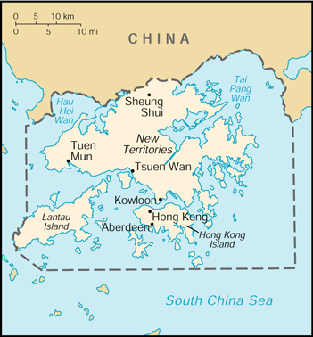

(special administrative region of China)
|
Hong Kong (special administrative region of China) |
|
| Introduction Geography People Government Economy Communications Transportation Military Transnational Issues | ||
|  | ||
| Hong Kong | Introduction | Top of Page |
| Background: | Occupied by the UK in 1841, Hong Kong was formally ceded by China the following year; various adjacent lands were added later in the 19th century. Pursuant to an agreement signed by China and the UK on 19 December 1984, Hong Kong became the Hong Kong Special Administrative Region (SAR) of China on 1 July 1997. In this agreement, China has promised that, under its "one country, two systems" formula, China's socialist economic system will not be practiced in Hong Kong and that Hong Kong will enjoy a high degree of autonomy in all matters except foreign and defense affairs for the next 50 years. |
| Hong Kong | Geography | Top of Page |
| Location: | Eastern Asia, bordering the South China Sea and China |
| Geographic coordinates: | 22 15 N, 114 10 E |
| Map references: | Southeast Asia |
| Area: |
total:
1,092 sq km
land: 1,042 sq km water: 50 sq km |
| Area - comparative: | six times the size of Washington, DC |
| Land boundaries: |
total:
30 km
border countries: China 30 km |
| Coastline: | 733 km |
| Maritime claims: | territorial sea: 3 NM |
| Climate: | tropical monsoon; cool and humid in winter, hot and rainy from spring through summer, warm and sunny in fall |
| Terrain: | hilly to mountainous with steep slopes; lowlands in north |
| Elevation extremes: |
lowest point:
South China Sea 0 m
highest point: Tai Mo Shan 958 m |
| Natural resources: | outstanding deepwater harbor, feldspar |
| Land use: |
arable land:
6%
permanent crops: 1% permanent pastures: 1% forests and woodland: 20% other: 72% (1997 est.) |
| Irrigated land: | 20 sq km (1997 est.) |
| Natural hazards: | occasional typhoons |
| Environment - current issues: | air and water pollution from rapid urbanization |
| Environment - international agreements: | party to: Marine Dumping (associate member), Ship Pollution (associate member) |
| Geography - note: | more than 200 islands |
| Hong Kong | People | Top of Page |
| Population: | 7,210,505 (July 2001 est.) |
| Age structure: |
0-14 years:
17.73% (male 677,785; female 600,781)
15-64 years: 71.52% (male 2,554,329; female 2,602,662) 65 years and over: 10.75% (male 354,199; female 420,749) (2001 est.) |
| Population growth rate: | 1.3% (2001 est.) |
| Birth rate: | 11.13 births/1,000 population (2001 est.) |
| Death rate: | 6.02 deaths/1,000 population (2001 est.) |
| Net migration rate: | 7.9 migrant(s)/1,000 population (2001 est.) |
| Sex ratio: |
at birth:
1.07 male(s)/female
under 15 years: 1.13 male(s)/female 15-64 years: 0.98 male(s)/female 65 years and over: 0.84 male(s)/female total population: 0.99 male(s)/female (2001 est.) |
| Infant mortality rate: | 5.83 deaths/1,000 live births (2001 est.) |
| Life expectancy at birth: |
total population:
79.67 years
male: 76.97 years female: 82.55 years (2001 est.) |
| Total fertility rate: | 1.29 children born/woman (2001 est.) |
| HIV/AIDS - adult prevalence rate: | 0.06% (1999 est.) |
| HIV/AIDS - people living with HIV/AIDS: | 2,500 (1999 est.) |
| HIV/AIDS - deaths: | less than 100 (1999 est.) |
| Nationality: |
noun:
Chinese
adjective: Chinese |
| Ethnic groups: | Chinese 95%, other 5% |
| Religions: | eclectic mixture of local religions 90%, Christian 10% |
| Languages: | Chinese (Cantonese), English; both are official |
| Literacy: |
definition:
age 15 and over has ever attended school
total population: 92.2% male: 96% female: 88.2% (1996 est.) |
| Hong Kong | Government | Top of Page |
| Country name: |
conventional long form:
Hong Kong Special Administrative Region
conventional short form: Hong Kong local long form: Xianggang Tebie Xingzhengqu local short form: Xianggang abbreviation: HK |
| Dependency status: | special administrative region of China |
| Government type: | NA |
| Administrative divisions: | none (special administrative region of China) |
| Independence: | none (special administrative region of China) |
| National holiday: | National Day (Anniversary of the Founding of the People's Republic of China), 1 October (1949); note - 1 July 1997 is celebrated as Hong Kong Special Administrative Region Establishment Day |
| Constitution: | Basic Law approved in March 1990 by China's National People's Congress is Hong Kong's "mini-constitution" |
| Legal system: | based on English common law |
| Suffrage: | direct election 18 years of age; universal for permanent residents living in the territory of Hong Kong for the past seven years; indirect election limited to about 100,000 members of functional constituencies and an 800-member election committee drawn from broad regional groupings, municipal organizations, and central government bodies |
| Executive branch: |
chief of state:
President of China JIANG Zemin (since 27 March 1993)
head of government: Chief Executive TUNG Chee-hwa (since 1 July 1997) cabinet: Executive Council consists of three ex-officio members and 10 appointed members; ex-officio members are: Chief Secretary Anson CHAN (since 29 November 1993), Financial Secretary Donald TSANG (since 7 March 1995), and Secretary of Justice Elsie LEUNG (since 1 July 1997) elections: NA |
| Legislative branch: |
unicameral Legislative Council or LEGCO (60 seats; 30 indirectly elected by functional constituencies, 24 elected by popular vote, and 6 elected by an 800-member election committee; members serve four-year terms)
elections: last held 10 September 2000 (next to be held NA 2004) election results: percent of vote by party - NA%; seats by party - Democratic Party 12, Democratic Alliance for the Betterment of Hong Kong 10, Liberal Party 7, Frontier Party 5, Hong Kong Progressive Alliance 4, New Century Forum 2, Hong Kong Association for Democracy and People's Livelihood 1, independents 19 |
| Judicial branch: | The Court of Final Appeal in the Hong Kong Special Administrative Region |
| Political parties and leaders: |
Association for Democracy and People's Livelihood [Frederick FUNG Kin-kee, chairman]; Citizens Party [leader NA]; Democratic Alliance for the Betterment of Hong Kong [Jasper TSANG Yok-sing, chairman]; Democratic Party [Martin LEE Chu-ming, chairman]; Frontier Party [Emily LAU Wai-hing, chairwoman]; Hong Kong Association for Democracy and People's Livelihood [leader NA]; Hong Kong Progressive Alliance [Ambrose LAU Hon-chuen]; Liberal Party [James TIEN Pei-chun, chairman]; New Century Forum [NQ Ching-fai, chairman]
note: political blocs include: pro-democracy - Association for Democracy and People's Livelihood, Citizens Party, Democratic Party, Frontier Party; pro-Beijing - Democratic Alliance for the Betterment of Hong Kong, Hong Kong Progressive Alliance, Liberal Party, New Century Forum |
| Political pressure groups and leaders: | Chinese General Chamber of Commerce (pro-China); Chinese Manufacturers' Association of Hong Kong; Confederation of Trade Unions (pro-democracy) [LAU Chin-shek, president; LEE Cheuk-yan, general secretary]; Federation of Hong Kong Industries; Federation of Trade Unions (pro-China) [LEE Chark-tim, president]; Hong Kong Alliance in Support of the Patriotic Democratic Movement in China [Szeto WAH, chairman]; Hong Kong and Kowloon Trade Union Council (pro-Taiwan); Hong Kong General Chamber of Commerce; Hong Kong Professional Teachers' Union [CHEUNG Man-kwong, president]; Liberal Democratic Federation [HU Fa-kuang, chairman] |
| International organization participation: | APEC, AsDB, BIS, CCC, ESCAP (associate), ICC, ICFTU, IMO (associate), Interpol (subbureau), IOC, ISO (correspondent), WCL, WMO, WToO (associate), WTrO |
| Diplomatic representation in the US: | none (special administrative region of China) |
| Diplomatic representation from the US: |
chief of mission:
Consul General Michael KLOSSON
consulate(s) general: 26 Garden Road, Hong Kong mailing address: PSC 464, Box 30, FPO AP 96522-0002 telephone: [852] 2523-9011 FAX: [852] 2845-1598 |
| Flag description: | red with a stylized, white, five-petal bauhinia flower in the center |
| Hong Kong | Economy | Top of Page |
| Economy - overview: | Hong Kong has a bustling free market economy highly dependent on international trade. Natural resources are limited, and food and raw materials must be imported. Indeed, imports and exports, including reexports, each exceed GDP in dollar value. Even before Hong Kong reverted to Chinese administration on 1 July 1997 it had extensive trade and investment ties with China. Per capita GDP compares with the level in the four big countries of Western Europe. GDP growth averaged a strong 5% in 1989-97. The widespread Asian economic difficulties in 1998 hit this trade-dependent economy quite hard, with GDP down 5%. The economy is undergoing a rapid recovery, with growth of 10% in 2000 to be followed by projected growth of 5% in 2001. |
| GDP: | purchasing power parity - $181 billion (2000 est.) |
| GDP - real growth rate: | 10% (2000 est.) |
| GDP - per capita: | purchasing power parity - $25,400 (2000 est.) |
| GDP - composition by sector: |
agriculture:
0.1%
industry: 14.3% services: 85.6% (1999 est.) |
| Population below poverty line: | NA% |
| Household income or consumption by percentage share: |
lowest 10%:
NA%
highest 10%: NA% |
| Inflation rate (consumer prices): | 3.7% (2000 est.) |
| Labor force: | 3.39 million (2000 est.) |
| Labor force - by occupation: | wholesale and retail trade, restaurants, and hotels 31.5%, community and social services 24%, financing, insurance, and real estate 14.5%, transport and communications 11.6%, manufacturing 7.7%, construction 2.6% (October 1999) |
| Unemployment rate: | 4.5% (2000 est.) |
| Budget: |
revenues:
$20.8 billion
expenditures: $24.5 billion, including capital expenditures of $NA (FY99/00) |
| Industries: | textiles, clothing, tourism, electronics, plastics, toys, watches, clocks |
| Industrial production growth rate: | 2.1% (2000) |
| Electricity - production: | 27.726 billion kWh (1999) |
| Electricity - production by source: |
fossil fuel:
100%
hydro: 0% nuclear: 0% other: 0% (1999) |
| Electricity - consumption: | 32.202 billion kWh (1999) |
| Electricity - exports: | 633 million kWh (1999) |
| Electricity - imports: | 7.05 billion kWh (1999) |
| Agriculture - products: | fresh vegetables; poultry |
| Exports: | $204 billion (including reexports; f.o.b., 2000 est.) |
| Exports - commodities: | clothing, textiles, footwear, electrical appliances, watches and clocks, toys |
| Exports - partners: | China 33%, US 24%, Japan 5%, UK 4%, Germany, Singapore (1999) |
| Imports: | $215 billion (f.o.b., 2000) |
| Imports - commodities: | foodstuffs, transport equipment, raw materials, semimanufactures, petroleum; a large share is reexported |
| Imports - partners: | China 44%, Japan 12%, US 7%, Taiwan 7%, South Korea, Singapore (1999) |
| Debt - external: | $48.1 billion (1999) |
| Currency: | Hong Kong dollar (HKD) |
| Currency code: | HKD |
| Exchange rates: | Hong Kong dollars per US dollar - 7.7990 (January 2001), 7.7912 (2000), 7.7575 (1999), 7.7453 (1998), 7.7421 (1997), 7.7343 (1996); note - Hong Kong became a special administrative region of China on 1 July 1997; before then, the Hong Kong dollar was linked to the US dollar at the rate of about 7.8 Hong Kong dollars per US dollar |
| Fiscal year: | 1 April - 31 March |
| Hong Kong | Communications | Top of Page |
| Telephones - main lines in use: | 3.839 million (1999) |
| Telephones - mobile cellular: | 3.7 million (December 1999) |
| Telephone system: |
general assessment:
modern facilities provide excellent domestic and international services
domestic: microwave radio relay links and extensive fiber-optic network international: satellite earth stations - 3 Intelsat (1 Pacific Ocean and 2 Indian Ocean); coaxial cable to Guangzhou, China; access to 5 international submarine cables providing connections to ASEAN member nations, Japan, Taiwan, Australia, Middle East, and Western Europe |
| Radio broadcast stations: | AM 7, FM 13, shortwave 0 (1998) |
| Radios: | 4.45 million (1997) |
| Television broadcast stations: | 4 (plus two repeaters) (1997) |
| Televisions: | 1.84 million (1997) |
| Internet country code: | .hk |
| Internet Service Providers (ISPs): | 17 (2000) |
| Internet users: | 1.85 million (2000) |
| Hong Kong | Transportation | Top of Page |
| Railways: |
total:
34 km
standard gauge: 34 km 1.435-m gauge (all electrified) (1996 est.) |
| Highways: |
total:
1,831 km
paved: 1,831 km unpaved: 0 km (1997) |
| Waterways: | none |
| Ports and harbors: | Hong Kong |
| Merchant marine: |
total:
354 ships (1,000 GRT or over) totaling 10,330,662 GRT/17,227,315 DWT
ships by type: barge carrier 1, bulk 208, cargo 36, chemical tanker 7, combination bulk 2, container 59, liquefied gas 6, multi-functional large-load carrier 2, petroleum tanker 26, refrigerated cargo 3, short-sea passenger 1, vehicle carrier 3 note: includes some foreign-owned ships registered here as a flag of convenience: Bermuda 2, Belgium 1, Canada 2, China 9, Japan 3, Mongolia 1, Norway 1, South Africa 1, UK 7 (2000 est.) |
| Airports: | 3 (2000 est.) |
| Airports - with paved runways: |
total:
3
over 3,047 m: 2 1,524 to 2,437 m: 1 (2000 est.) |
| Heliports: | 2 (2000 est.) |
| Hong Kong | Military | Top of Page |
| Military branches: | Hong Kong garrison of China's People's Liberation Army (PLA) including elements of the PLA Ground Forces, PLA Navy, and PLA Air Force; these forces are under the direct leadership of the Central Military Commission in Beijing and under administrative control of the adjacent Guangzhou Military Region |
| Military manpower - military age: | 18 years of age |
| Military manpower - availability: | males age 15-49: 2,020,937 (2001 est.) |
| Military manpower - fit for military service: | males age 15-49: 1,520,531 (2001 est.) |
| Military manpower - reaching military age annually: | males: 47,139 (2001 est.) |
| Military expenditures - dollar figure: | $NA; note - separate budget for Hong Kong not established by China |
| Military expenditures - percent of GDP: | NA% |
| Military - note: | defense is the responsibility of China |
| Hong Kong | Transnational Issues | Top of Page |
| Disputes - international: | none |
| Illicit drugs: | a hub for Southeast Asian heroin and regional stimulants trade; transshipment and money-laundering center; increasing indigenous amphetamine abuse |
{kind=link}
{kind=link}